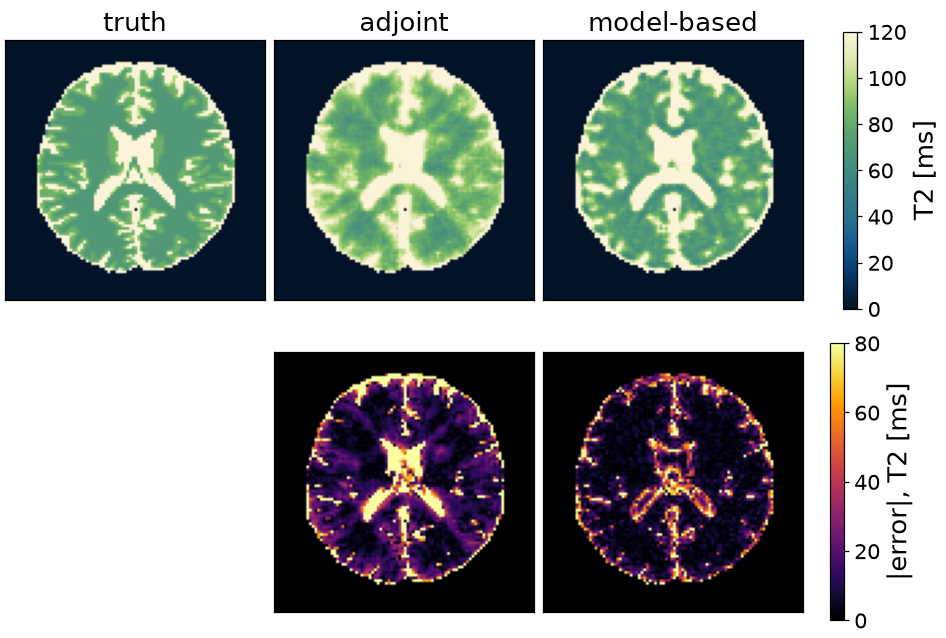

Note
Go to the end to download the full example code or to run this example in your browser via Binder.
Nonlinear inversion from k-space#
The scope of this notebook is to reconstruct T2 maps straight from k-space, with the signal model inside the forward operator, and to say where the time and the memory go.
Physics-based reconstruction removes the intermediate images. The forward operator is a chain
– sampling, Fourier encoding, coil sensitivities, and the signal model –
and the parameter maps are solved for directly against the k-space that was
measured. Only the last factor changes with the sequence, and it is the only
one TorchSim supplies: ModelOperator turns any
simulator into it, and the encoding comes from mri-nufft.
Unlike a subspace this stays nonlinear, so it needs a starting guess and a loop around it, and it pays for that with a model of any number of parameters where a basis would have to span their product. The comparison here is against gridding, by iteratively regularized Gauss-Newton.
Wang X, Tan Z, Scholand N, Roeloffs V, Uecker M. Physics-based reconstruction methods for magnetic resonance imaging. Phil Trans R Soc A 379:20200196 (2021).
The phantom is BrainWeb’s, reached through brainweb-dl: get_mri
fetches the fuzzy tissue memberships, and the package ships the table of
relaxation times that goes with them – which is what the two standard
library imports read.
import csv
from pathlib import Path
import brainweb_dl
from brainweb_dl import get_mri
The Fourier encoding is not TorchSim’s and never will be. mri-nufft
supplies the radial trajectory and the non-uniform transform that plays it;
deepinv supplies the LinearPhysics base class
the encoding operator is written against, and the linear solver a
Gauss-Newton step hands its linearized problem to. Anything exposing A
and A_adjoint composes with what TorchSim supplies.
import mrinufft
from deepinv.physics import LinearPhysics
from mrinufft.trajectories import initialize_2D_radial
From TorchSim: the sequence, the estimator the contrast-then-fit routes
need, and ModelOperator, which is the signal
model as a factor of the forward operator.
import time
import numpy as np
import torch
from torchsim.estimators import DictionaryMatcher
from torchsim.recon import GaussNewton, ModelOperator, Schedule, iterative
from torchsim.simulators import MultiEchoSimulator
What the experiment is: a 96 matrix read as 16 radial spokes per echo, eight echoes, and the rank the baseline’s estimator compresses to.
SIZE = 96
ECHOES = 8
SPOKES = 16
SAMPLES = 192
RANK = 3
# The GPU transform is used when it is both installed and usable; the
# simulation follows it, so the images and the operator meet on one device.
on_gpu = torch.cuda.is_available() and mrinufft.check_backend("cufinufft")
device = "cuda" if on_gpu else "cpu"
backend = "cufinufft" if on_gpu else "finufft"
Phantom#
BrainWeb subject 0, slice 90, resampled to the matrix reconstructed here. BrainWeb publishes fuzzy memberships rather than labels, so weighting the tabulated relaxation times by them gives a T2 map whose mixed voxels sit between the pure ones, known everywhere.
Sequence and sampling#
A multi-echo spin echo on a golden-angle radial trajectory that rotates
between echoes. Sixteen spokes per echo across a 96-sample matrix is roughly
ninefold undersampled. The protocol stays on the host;
ModelOperator takes it wherever the maps are.
TE = torch.linspace(10.0, 150.0, ECHOES)
simulator = MultiEchoSimulator(TE=TE)
images = (
torch.as_tensor(simulator.to(device).simulate(T2=T2_true)).to(torch.complex64)
* M0_true.to(torch.complex64)[..., None]
)
trajectory = (
initialize_2D_radial(SPOKES * ECHOES, SAMPLES, tilt="golden")
.astype(np.float32)
.reshape(ECHOES, SPOKES * SAMPLES, 2)
)
build = mrinufft.get_operator(backend)
per_echo = [
build(trajectory[echo], (SIZE, SIZE), n_coils=1, squeeze_dims=False, density=True)
for echo in range(ECHOES)
]
class RadialEncoding(LinearPhysics):
"""``(batch, echoes, x, y)`` images to k-space, one trajectory per echo.
This is the whole of ``P F C`` for this experiment, and none of it is
TorchSim's: it wraps mri-nufft, which is what a real pipeline would do
with its own trajectory, its own density compensation and its own coils.
"""
def A(self, x, **kwargs):
return torch.stack(
[per_echo[e].op(x[:, e][:, None])[:, 0] for e in range(ECHOES)], 1
)
def A_adjoint(self, y, **kwargs):
return torch.stack(
[per_echo[e].adj_op(y[:, e][:, None])[:, 0] for e in range(ECHOES)], 1
)
encoding = RadialEncoding()
kspace = encoding.A(images.movedim(-1, 0)[None])
# The k-space is scaled so the adjoint image peaks at one. Every damping
# weight below is then a number about the model rather than about the
# receiver gain, which is what makes one choice of it transferable.
gridded = encoding.A_adjoint(kspace)[0].movedim(0, -1)
scale = float(gridded.abs().max())
kspace, gridded = kspace / scale, gridded / scale
16 spokes per echo: 9x undersampled
The maps on the left are what every route recovers; the spokes on the right are all that is measured of them, one echo’s worth, rotated by the golden angle from the echo before.

Estimator for the baseline#
The baseline reconstructs images and then fits them, so it needs an estimator, stated over a compressed basis: three directions hold essentially all of an eight-echo exponential. The nonlinear route has no such step – its answer is the maps.
grid = torch.linspace(20.0, 400.0, 500)
mapping = DictionaryMatcher(simulator).fit(T2=grid, M0=1.0, rank=RANK, seed=0)
rank 3 of 8 contrasts keeps 0.999992
Baseline reconstruction#
Gridding is the adjoint with a density weighting – one pass, smooth, biased – and the estimator above turns its eight images into a T2 map. Sixteen spokes of 192 samples is 3072 measurements against 9216 unknowns, so each echo alone is underdetermined and iterating has nothing to converge to. Accuracy comes from a constraint across the echoes, which is the model.
adjoint = mapping(gridded)["T2"]
adjoint per echo 0.0s T2 error 30.6 ms (20.6%)
tensor([[ 52.7455, 61.8838, 58.0762, ..., 96.9138, 74.0681, 63.4068],
[ 47.4148, 49.6994, 50.4609, ..., 91.5832, 66.4529, 77.8758],
[ 52.7455, 60.3607, 74.0681, ..., 76.3527, 71.0220, 78.6373],
...,
[ 71.0220, 80.1603, 106.0521, ..., 74.8297, 51.9840, 64.1683],
[103.0060, 123.5671, 128.1363, ..., 93.8677, 64.9299, 56.5531],
[122.0441, 109.0982, 111.3828, ..., 82.4449, 81.6834, 69.4990]])
Nonlinear model#
The signal model stays inside the forward operator and the maps are solved for against k-space directly. Two things are declared:
what is unknown –
T2, plus the complex amplitude the operator carries for it, which is proton density and receive phase together;what T2 may be – a box bound, kept by solving for a transformed variable so no iterate leaves it. That matters more here than in a fit: the model is evaluated at every voxel to predict every k-space sample, so one unphysical voxel corrupts the whole residual.
An equality constraint would be written into the model instead.
operator = ModelOperator(simulator, "T2", bounds={"T2": (20.0, 400.0)})
# The amplitude starts from the first gridded echo, which is nearly free and
# is most of what makes the first Newton step sensible.
initial = operator.initial((1, SIZE, SIZE), T2=100.0).to(device)
initial[0, ..., 1] = gridded[..., 0].real
initial[0, ..., 2] = gridded[..., 0].imag
An iteratively regularized Gauss-Newton: linearize, solve, step, lower the
damping. TorchSim supplies the loop and the derivative but not the linear
solver – iterative() hands the linearized problem to
the same deepinv routine the baseline called. A proximal solver under a
wavelet prior is a change to that one argument.
found = GaussNewton(
Schedule(initial=1e-3, factor=0.5, minimum=1e-7),
solve=iterative(max_iter=20),
max_iterations=8,
).minimize(operator, kspace, initial, encoding=encoding)
# No fit afterwards: the maps are what was solved for.
modelled = operator.split(found.x)["T2"][0]
model-based 3.0s T2 error 17.1 ms (12.6%)
residual 5.529e+03 -> 5.577e-01, damping 1e-03 -> 8e-06
Timing#
Each conjugate-gradient step costs one product with the Jacobian and one with its adjoint, and each is the encoding operator once and the model once. Timing the four says which half a faster reconstruction would come from; here they are comparable.
Neither product builds the Jacobian. That is a memory argument: the blocks
are voxels x channels x contrasts where a signal is voxels x
contrasts, so what is not held is the channel count times the signal, every
iteration.
tangent = torch.randn_like(initial)
predicted = operator.A_jvp(initial, tangent)
adjoint_image = encoding.A_adjoint(kspace).movedim(1, -1)
per conjugate-gradient step, 3 channels solved for:
model J v 3.7 ms
model J^H v 1.3 ms
encoding A 5.3 ms
encoding A^H 5.1 ms
the Jacobian this avoids holding: 1.7 MiB, against 0.6 MiB for a signal
Maps#

Writing a different model#
The model is the only thing above that names a relaxation time, and it is an
ordinary Simulator – the same object the fitting
and sequence-design notebooks use. Water-fat separation, T2* with a field
map, a Look-Locker inversion recovery: each is a different evaluate, and
the operator, the loop and the encoding are unchanged.
Total running time of the script: (0 minutes 4.064 seconds)